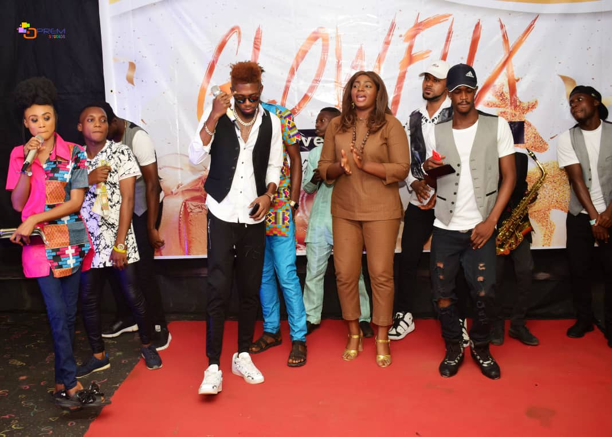
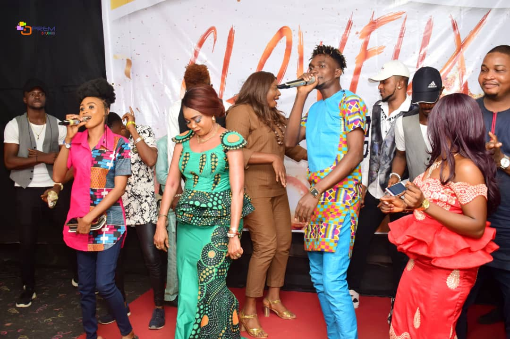
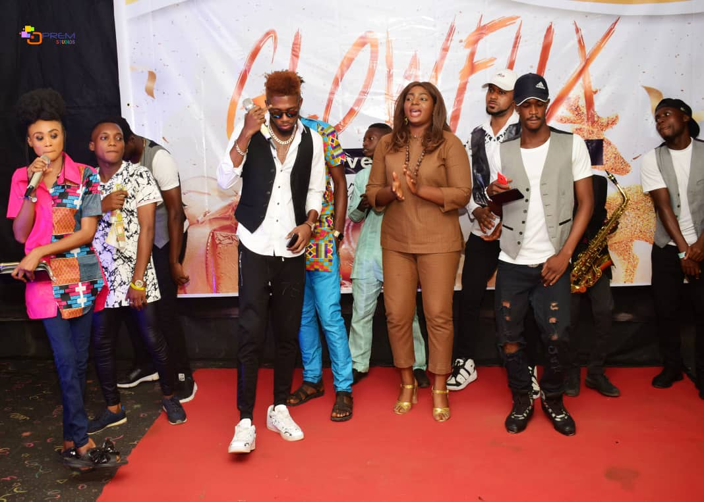
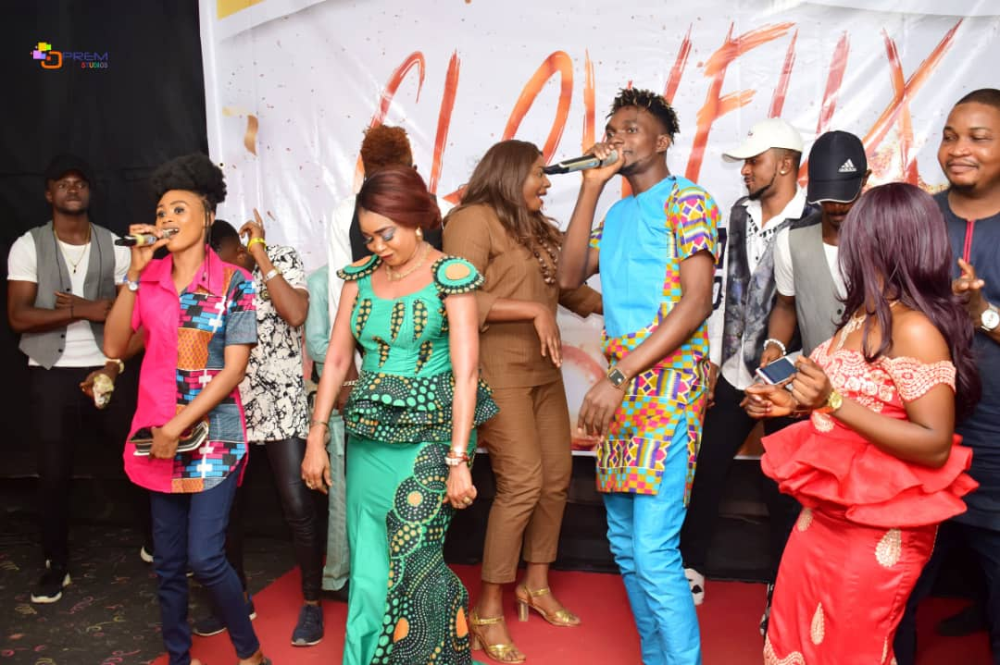

THE ACTUALIZERS
Our work will not be complete if we failed to mention the amazing individuals who contribute their widow's might towards ensuring that the vision and mission of this project stays on course. Thus, we present to you our super team.
NIKE PELLER - CELEBRITY AMBASSADOR
Olanike Abiola Peller is an award-winning veteran Yoruba movie actor. She is also the daughter of the wiely celebrated late Professor Peller
Despite being on temporal break from active acting, the cerebral screen goddess still holds sway in the movie industry and commands the respect of both young and old colleagues.
She is th Yeye Agbasaga of Erin Osun Oshogbo, Yeye Oge of Ajuwon among others. Her religious titles include: Alaranse Adinni and Alakoso Adinni. She has received multiple international awards from London, The US, Dublin, India and more.
She is currently into active business which includes sales, marketing and consultancy.
Being a woman with a golden heart, Nike Peller was fully elected to be part of the project, GLOWFUX, after being convinced of its vision. She is the first and currently the only Celebrity Ambassador cum Actualizer for the project.
BOSE MIMSHACK IDIAKA - GLOWFUX COORDINATOR
Abosede Mimshack Idiaka is a fashionpreneur, event manager, radio presenter and a beauty consultant.
Her love for being around children spurred her to study Education as a discipline at the university and went on to teach for many years upon graduating.
She has also developed and packaged many children and youth-oriented programmes which mainly focused on educating them on societal issues.
Her passion for identifying with whatever could impact positively on children got her to bid for coordinating GLOWFUX 2018. She was initially considered for the role of an Assistant Coordinator, howver her dedication to service, creativity with ideas and drive for excellence in the course of her work as an Assistant Coordinator were so compelling that the project's initiator resolved to appoint her as the substantive Coordinator of GLOWFUX 2018.
Bose never failed to impress the entire team with her superlative performance as Coordinator of the project's 2018 edition. For us at Fanafillit, Bose's resourcefulness and doggedness are just too precious to let go of, hence our resolve to allow her maintain the status of coordinating subsequent editions of project GLOWFUX.
ALHAJA OLUFUNMI OSHINOWO BASHORUN - MATRON
Alhaja Honourbale Olufunmi Oshinowo Bashorun retired from service to the Lagos State Health Sector as Deputy Director having served as a Nurse, Midwife, Health Educator and Social Worker.
As a passionate community builder, she is well known and respected for her significant roles in numerous humanitarian and selfless causes, acts which have earned her numerous awards of honour, recognition and appreciation from community level to the national and international levels.
She is a strong member of the Ikorodu Diamond Lions Club, a community leader of note, a political stalwart and a committed Moslem.
Alhaja Bashorun is into active business which includes sales and services.
She has been fully supportive of the project GLOWFUX from inception in the year 2016 and has contributed towards the project's success and sustainability till date. Her unalloyed support for the project gave the project organizers the motivation to appoint and decorate her officially as Matron for Project GLOWFUX.
Her role as matron includes: contributing financially and morally to the continuous growth of GLOWFUX and using her goodwill to secure the trust and confidence of well-meaning Nigerians to identify with and support Project GLOWFUX at all times.
ALHAJI TAIWO OSHIKOYA - PATRON
Alhaji Taiwo Oshikoya is an astute businessman and a community builder of note.
He is the CEO of Corsican Brothers Ltd, the major marketing and distribution company for DSTV and GoTV in Ikorodu Division of Lagos State.
Popularly called Daddy T by both young and old, he is a jolly good man with a heart filled with milk of kindness who goes the extra mile at all times to put smiles on faces even at the detriment of his convenience.
Despite being a devote Moslem, he is a man with open arms to render assistance to anyone that goes to him without discrimination.
Daddy T has been part of project GLOWFUX from its conceptualization. He it was who encouraged the initiator to execute the project when the idea was first shared with him in the year 2016 and has since then not relented in contributing hid bit in terms of advice, funding and networking to the project's success and sustainability till date.
His exceptional commitment to the project made made the project organizers realize and decide that appointing him as Project GLOWFUX's Patron was non-negotiable.
His roles as patron include: contributing financially and morally to the continuous growth of GLOWFUX as well as using his goodwill to secure the trust and confidence of well-meaning Nigerians to identify with and support the project GLOWFUX at all times.


 


